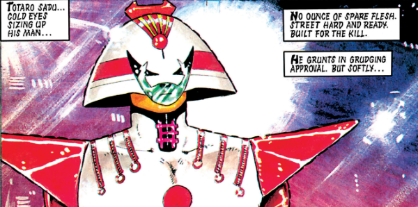

Judge-Inspector Totaro Sadu of Hondo City was initially an opponent of Dredds during a spy fiasco but later worked with him during the Judgement Day crisis.
Art by Colin MacNeil
| Story Title | Parts | Pages | w indicates a wraparound coverCovers | Year(s) | Issues | Writer | Artist | Colourist | Letterer |
|---|---|---|---|---|---|---|---|---|---|
From Judge DreddOur Man in Hondo | 4 | 24 | 608: Brendan McCarthy 609: Mick Austin 611: Colin MacNeil 3 | 1989 | 608-611 | John Wagner | Colin MacNeil | <-- | Tom Frame |
From Judge Dredd Megazine crossover.Judgement Day | 20 | 150 | 786: Peter Doherty M2.04: Dean Ormston 788: Brian Williamson M2.07: David Bishop 794: Brett Ewins 796: Carlos Ezquerra 798: Peter Doherty 799: Carlos Ezquerra 8 | 1992 | 786-799, M2.04-2.09 | Garth Ennis | Peter Doherty 1‑2, 10‑11, 19 Carlos Ezquerra 4‑5, 7‑8, 13‑14, 16‑17, 20 various | <-- | Tom Frame |
| Posters | |||||||||
From Judge Dredd Star Scan.[Dredd & Sadu] | 1 | 1 | 0 | 1989 | 610 | n/a | Kevin Walker | <-- | n/a |
| year | episodes | pages |
| 1980 | 0 | 0 |
| 1981 | 0 | 0 |
| 1982 | 0 | 0 |
| 1983 | 0 | 0 |
| 1984 | 0 | 0 |
| 1985 | 0 | 0 |
| 1986 | 0 | 0 |
| 1987 | 0 | 0 |
| 1988 | 0 | 0 |
| 1989 | 4 | 24 |
| 1990 | 0 | 0 |
| 1991 | 0 | 0 |
| 1992 | 20 | 150 |
| 1993 | 0 | 0 |
| 1994 | 0 | 0 |
| 1995 | 0 | 0 |
| 1996 | 0 | 0 |
| 1997 | 0 | 0 |
| 1998 | 0 | 0 |
| 1999 | 0 | 0 |
| 2000 | 0 | 0 |
| 2001 | 0 | 0 |
Comic strip data (excludes other content):